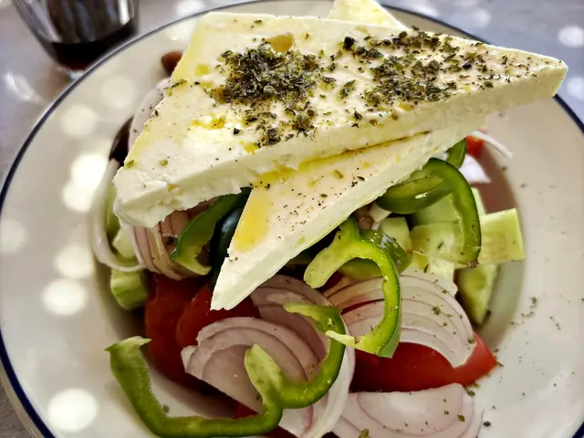
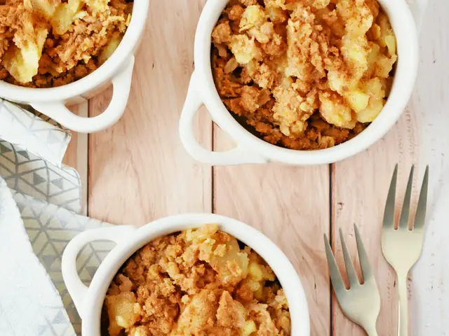

8 recipes
Europe
Tomatoes, herbs and slow lunches
 ItalyPizza Margherita40 min · Medium
ItalyPizza Margherita40 min · Medium ItalySpaghetti al Pomodoro25 min · Easy
ItalySpaghetti al Pomodoro25 min · Easy ItalyTomato Bruschetta15 min · Easy
ItalyTomato Bruschetta15 min · Easy FranceRatatouille60 min · Medium
FranceRatatouille60 min · Medium
GreeceGreek Salad10 min · Easy SpainPatatas Bravas40 min · Easy
SpainPatatas Bravas40 min · Easy PolandPotato Cheese Pierogi70 min · Hard · Vegetarian version
PolandPotato Cheese Pierogi70 min · Hard · Vegetarian version
United KingdomApple Crumble50 min · Easy